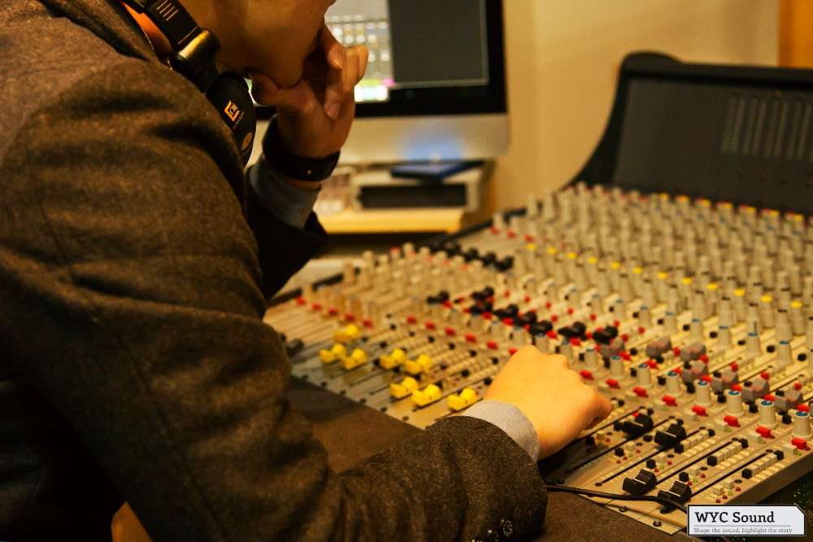
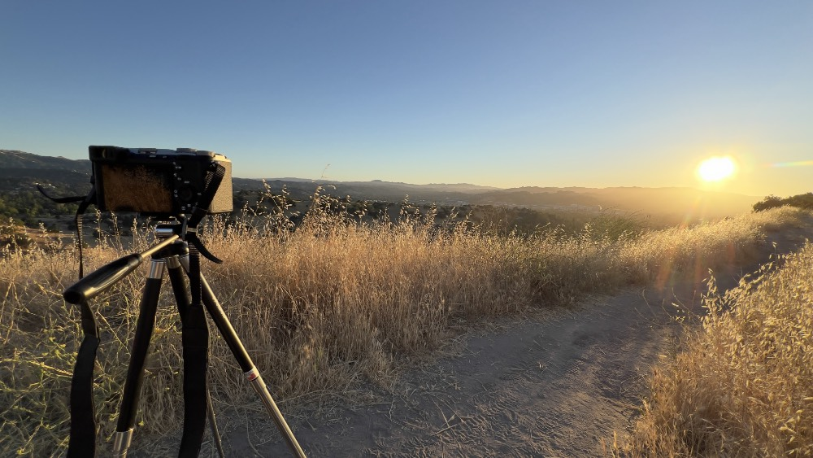

Sound brings life to pictures. Hearing brings connection to life.
Born in Busan, South Korea, in 1992, Dr. Cho’s life has been a dynamic journey defined by a constant pursuit of meaningful connection and excellence. Moving to Ohio in 2008 and later graduating from high school in Illinois, he quickly learned the value of communication while navigating unfamiliar environments; imagine him using body language to express his hunger. A fascination with the mechanics of audio led him first to Goucher College as a computer music major, and eventually to the Savannah College of Art and Design (SCAD), where he transferred in 2013 to study sound design.
His trajectory took an unexpected turn in 2014 when he returned to South Korea for mandatory military service, in which he was recognized for his audio engineering background. Following a medical discharge in 2015, he transitioned to a civil service role—a pivotal period where he cultivated profound empathy and compassion by serving seniors and marginalized populations facing various medical difficulties. Returning to the U.S. in 2016 to complete his degree, he truly began to bloom as a sound designer. By the time of his graduation in 2018, his dedication to the craft was recognized with regional (Southeast Emmy), national (Adobe), and international (Red Dot) awards for excellence; simultaneously, he built an extensive portfolio of independent projects in Korea.
This success propelled him to Hollywood, where he worked as a sound designer for motion pictures, immersing himself in the immense power and importance of sound itself. However, the most transformative moment of his career occurred not in a studio but through pivotal experiences that redefined his purpose. Driven by this calling, he began his formal studies in audiology at California State University, Los Angeles.
Read more about Dr. Cho's journey
Looking back, I see that I was always moved by compassion. I became a sound designer because I wanted to share my excitement when listening to well-designed sound effects, and now I want to provide a foundation where everyone can have the opportunity to experience what I felt. Also, sound brings back memory, and it is mind-breaking to see that being taken away.
During his time as a sound designer in Hollywood, he spent countless hours editing audio and working on frequency spectral layers. Yet, as he shared his works, he began to encounter a recurring, humbling realization: not everyone experienced the soundscape as he did. He observed that for some, the intricate textures and immersive quality of the sound he crafted were lost, revealing the vast disparity in how individuals perceive the sound of the world around them.
This awareness only deepened during his subsequent volunteer work at church, where he witnessed members with hearing loss struggling to follow conversations, slowly withdrawing into isolation. Eager to bridge the gap, he instinctively turned to his professional toolkit—adjusting soundboards and applying post-production techniques to improve clarity. However, he quickly encountered the hard limits of mechanical amplification, realizing that technical fixes could not truly restore the human connection that was slipping away.
The turning point, in fact, began much earlier, during a celebratory trip to Disneyland. While watching the nightly fireworks, he observed a diverse crowd—from young children lost in wonder to older adults moved to tears by nostalgic melodies. It was a visceral reminder of how deeply sound anchors our memories and connects us to the present. Yet, amidst the collective joy, he was struck by a poignant realization: for those with hearing impairment, this shared emotional experience remained out of reach. Driven by a desire to restore authentic human connection rather than merely simulating audio, he shifted his focus entirely to pursue a Doctorate in Audiology at California State University, Los Angeles.
Today, Dr. Cho actively engages with the community to spread awareness about hearing loss and balance issues via seminars and events. His practice is rooted in a singular, driving belief: every individual deserves the best quality of life as much as possible, and good hearing is one of the most influential factors. He firmly believes that equipping patients with an accurate, balanced understanding of the mechanisms behind their conditions empowers them to cope effectively with their hearing difficulties.
In his practice, education and transparent communication form the core pillars of his practice. Driven by a keen interest in academics and emerging science, he runs a blog to decode new research, share clinical opinions, and review the latest technologies. He personally tests hearing aids to understand how they sound and feel in daily life. Fundamentally, Dr. Cho asserts that medical inequality often stems from a disproportionate distribution of information. Because of this, his counseling sessions are strictly built on transparency—ensuring there is no hidden information or withheld facts, only clear, unbiased guidance for every patient.
A Unique Perspective

His ability to blend advanced technical precision with deep human compassion sets him apart as a clinician. His transition from an award-winning sound designer to an audiologist provides him with a distinct, mechanical understanding of auditory environments that few others possess. When patients describe their struggles—whether it is the ambient chaos of a crowded restaurant, the difficulty of isolating voices in distant rooms, or the frustration of navigating busy streets—Dr. Cho does not just hear the clinical complaint; he can mentally simulate the exact acoustic environment they are navigating. Having spent years crafting intricate soundscapes for motion pictures, he possesses an intimate, visceral grasp of both the nuances of sound and the realistic limitations of amplification technology. This background ensures that his approach to audiology is rooted in empathy; he understands that hearing loss is not merely a technical deficit but a significant barrier to connection. By combining the rigorous standards of an audio engineer with a compassionate, patient-centered focus, he offers guidance that is as technically accurate as it is deeply personal, ensuring his patients feel heard, understood, and effectively equipped to engage with the world around them.
Beyond the Clinic

Dr. Cho finds balance and inspiration in a life rich with connection and creativity. He treasures time spent with his family and has recently begun exploring the golf course—a new interest he is cultivating alongside his wife. While he doesn’t keep pets of his own, he has a great fondness for dogs and cats and occasionally fosters kittens, enjoying the chance to nurture and socialize them. His creative spirit remains a vibrant force, whether he is capturing the world through photography, producing music, or picking up the guitar or piano. He also continues to explore the world through field recording, always listening for the next interesting soundscape. For Dr. Cho, these personal passions—grounded in family, art, and nature—fuel the energy and empathy he brings to his practice every day.